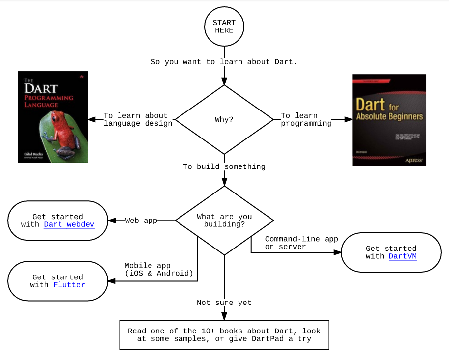

Dart语言是由谷歌公司开发的网络编程语言，于2011年10月10日发布。
Helpful flowchart

前景
首先提升开发效率的需要，然后替代因为各方利益不一、发展缓慢的JavaScript，而且不仅在浏览器端，通过Dart VM，像NodeJS那样统一前后端
Dart踌躇满志的想要取代Java和JavaScript成为Web开发的首选语言，一个跨平台的强类型语言
近期与Java的版权纠纷，促使google考虑dart来作为Android的上层语言
Fuchsia：google正在对即将到来的物联网进行布局，可能也会采用亲生儿子dart作为开发语言
TODO
| Use case | Get started | ||
|---|---|---|---|
| Web | 创建一个在任何现代浏览器中运行的应用程序 | Dart webdev | |
| Mobile | 从在iOS和Android上运行的单一代码库创建应用程序 | Flutter | |
| Server | 创建一个命令行应用程序或服务器 | Dart VM |